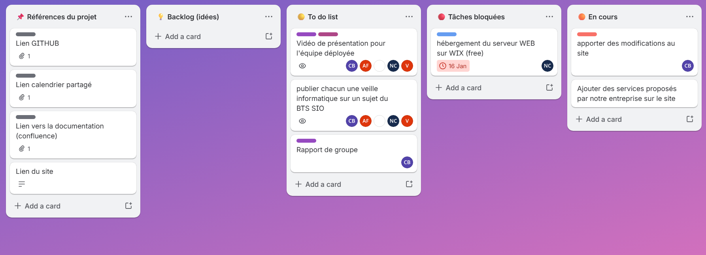
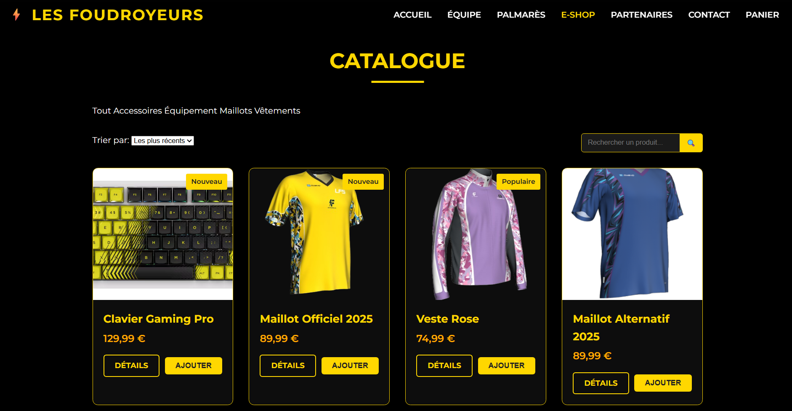

Gestion d’un projet de site e-commerce fictif — Projet Foudroyeur
Contexte
Dans le cadre d’un projet réalisé en groupe, nous avons conçu un site e-commerce fictif nommé Les Foudroyeurs. L’objectif du projet était de mettre en place une boutique en ligne orientée e-sport permettant la présentation et la vente de produits dérivés.
Ce projet m’a permis de travailler en mode projet, d’organiser les différentes tâches, de collaborer avec plusieurs membres d’équipe et de suivre l’avancement des travaux jusqu’à la finalisation de la solution.
Objectifs
- Concevoir un site e-commerce fictif
- Définir les besoins et fonctionnalités
- Organiser le travail d’équipe
- Planifier les tâches du projet
- Suivre l’avancement via un tableau collaboratif
- Créer une interface moderne et responsive
- Présenter les produits et catégories du site
- Assurer le suivi du projet jusqu’à la livraison
Environnement technique
Travaux réalisés
Organisation du projet
Mise en place d’un tableau collaboratif permettant de répartir les tâches, suivre les actions en cours, identifier les blocages et assurer le pilotage global du projet.
Conception du site
Participation à la création de l’interface du site, des différentes pages et de l’organisation du catalogue de produits e-commerce.
Travail collaboratif
Coordination avec les membres du groupe afin de répartir les missions, suivre l’avancement et centraliser les ressources du projet.
Suivi et amélioration
Analyse des retours, correction de certaines parties du site et amélioration de l’ergonomie générale de l’interface.
Fonctionnalités mises en place
- Création d’un catalogue de produits
- Organisation des catégories e-commerce
- Création d’une interface responsive
- Navigation entre les différentes pages
- Gestion collaborative du projet
- Suivi des tâches avec Trello
- Centralisation des ressources via GitHub
- Documentation et suivi du projet
Gestion du projet

Utilisation d’un tableau Trello afin de suivre les tâches du projet, répartir les missions entre les membres de l’équipe et identifier les éléments bloquants durant le développement.
Aperçu du site e-commerce

Le site présente un catalogue de produits orienté e-sport avec différentes catégories, une interface moderne et une navigation pensée pour l’expérience utilisateur.
Résultats obtenus
Projet abouti
- Site e-commerce fonctionnel
- Organisation efficace des tâches
- Travail collaboratif structuré
- Suivi du projet jusqu’à la finalisation
- Création d’une interface moderne
- Gestion des priorités et des corrections
Impact
Ce projet m’a permis de développer mes compétences en gestion de projet, en travail d’équipe et en organisation des tâches techniques dans un contexte proche d’un projet réel.
Compétences mobilisées
- Travail en mode projet
- Organisation et planification
- Gestion collaborative
- Développement web
- Suivi des tâches et indicateurs
- Communication en équipe
- Conception d’une interface e-commerce
Bilan personnel
Cette réalisation m’a permis d’apprendre à travailler dans une logique de gestion de projet avec des outils collaboratifs. J’ai pu améliorer ma capacité à organiser des tâches, respecter des objectifs et collaborer efficacement au sein d’une équipe.